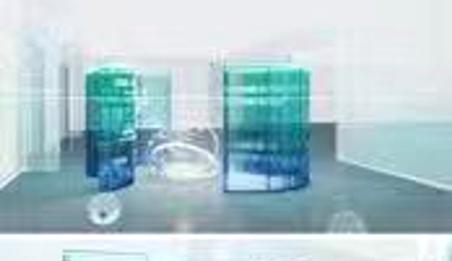
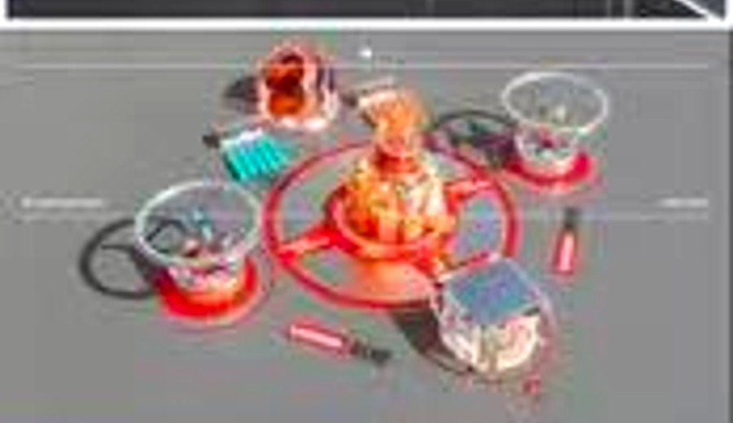
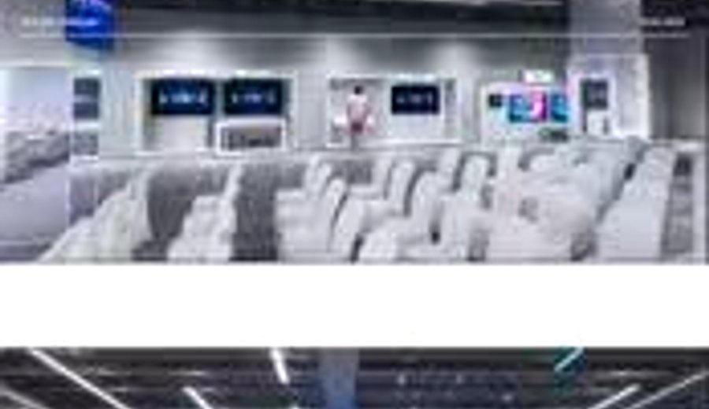
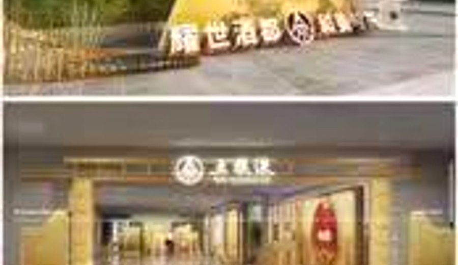
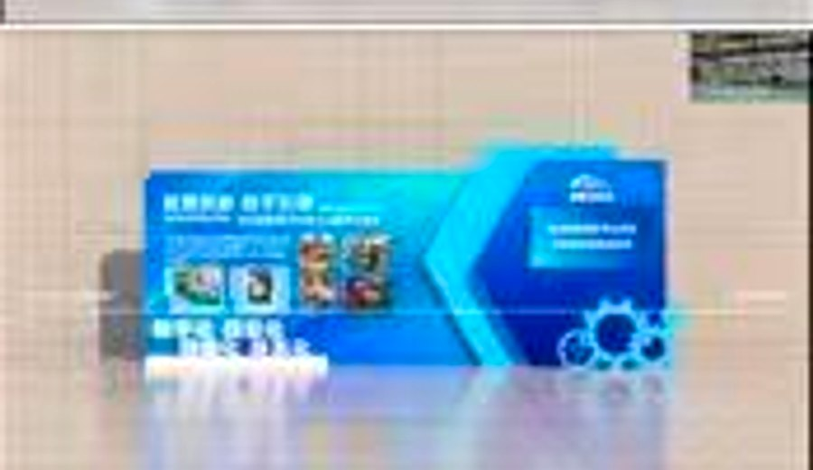
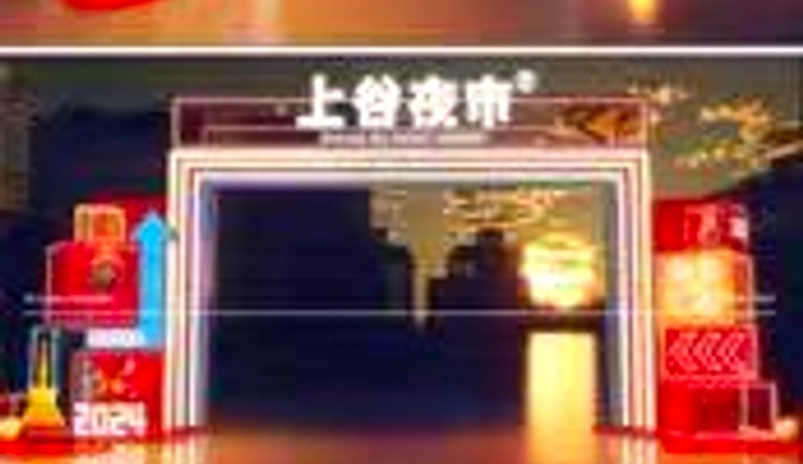
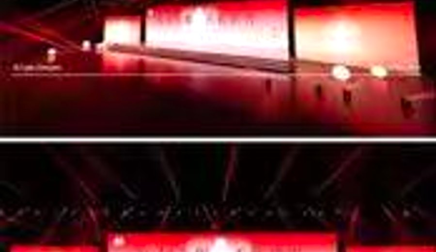
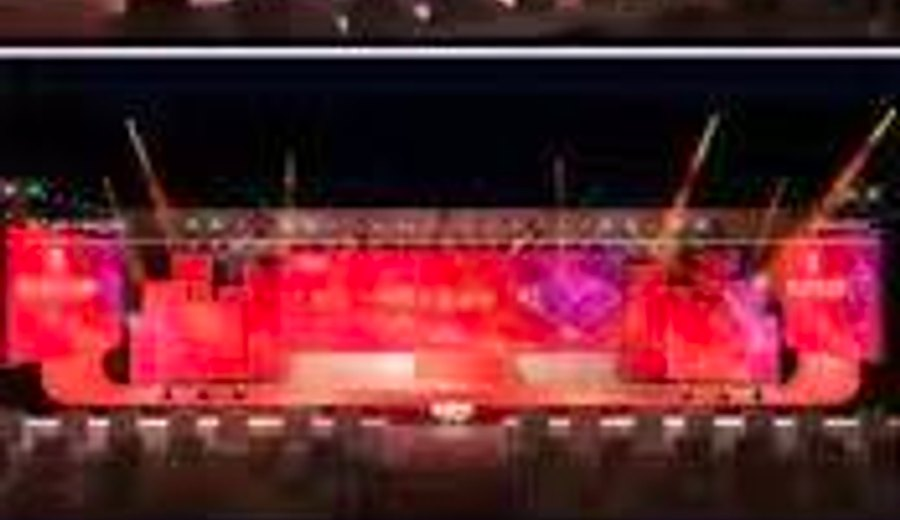

Stage 01
Selected Portfolio
从发布会、展台、展厅到夜间灯光场景，作品整体呈现出强烈的现场感和品牌空间控制力。

Stage 01

Exhibit 02

Launch 03

Space 04

Stage 05

Exhibit 06

Launch 07

Space 08
Design Console
面向企业年会、会议和发布现场，完成舞台空间、灯光氛围与品牌视觉的整合表达。
擅长展览展示空间建模、渲染与动线呈现，让方案在落地前具备清晰可判断的画面。
能处理轻量化搭建、品牌识别、互动装置与现场传播需求之间的平衡。
熟练使用 3dmax、CAD、KeyShot、Photoshop、CorelDRAW、AE、AI 等工具完成方案链路。
Career Track
负责舞美公关活动、展览展示效果图、CAD 制图、VR 全景效果图与 KeyShot 渲染相关工作。
参与 2D/3D 设计，覆盖建模渲染、平面协同与活动展示视觉。
从事艺术类设计、方案设计、建模与渲染相关工作。
产品设计教育背景，为空间、构造和视觉表达打下基础。